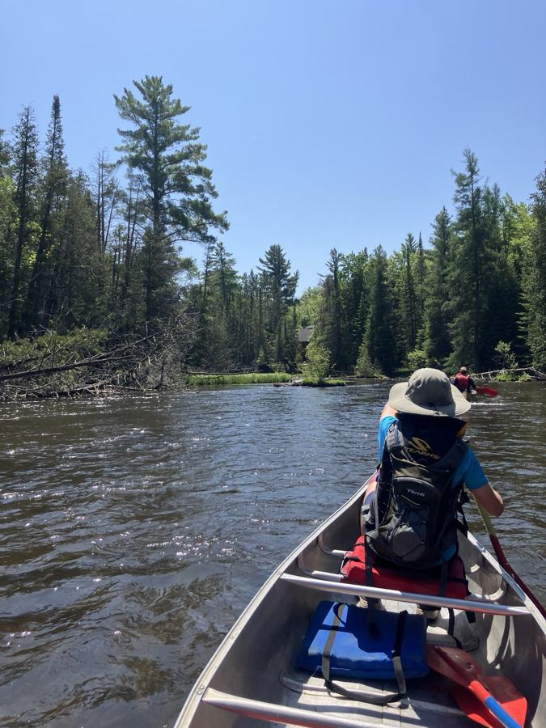
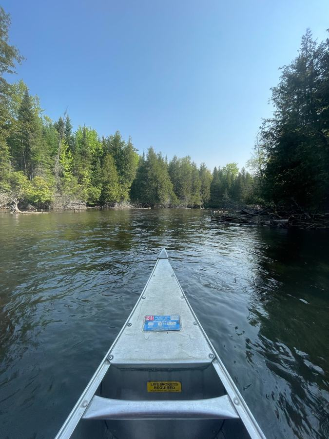
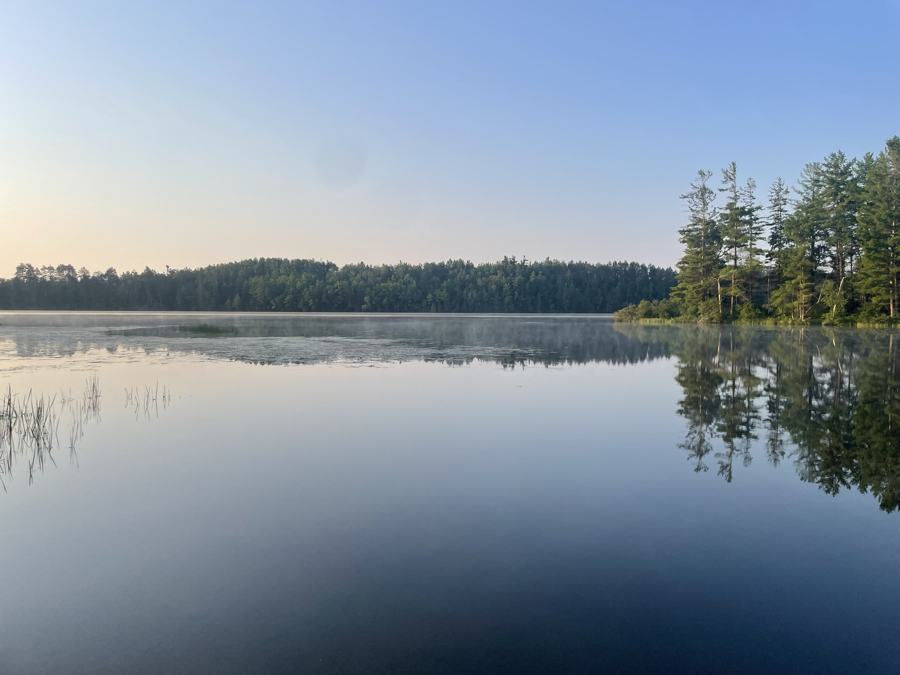
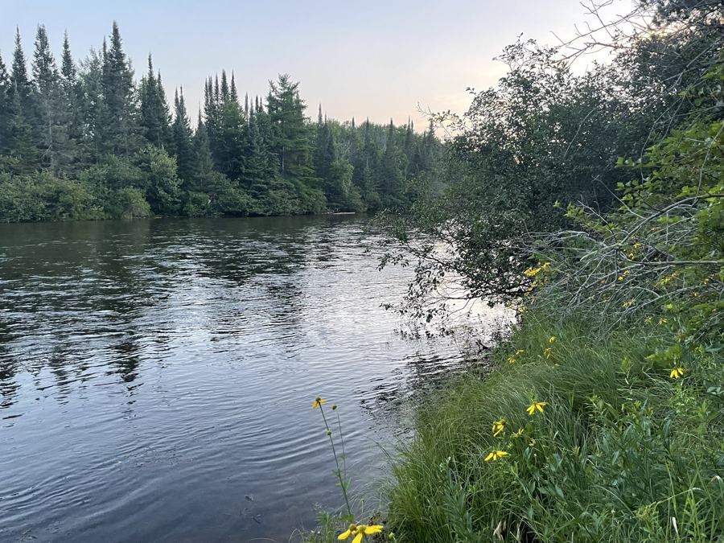
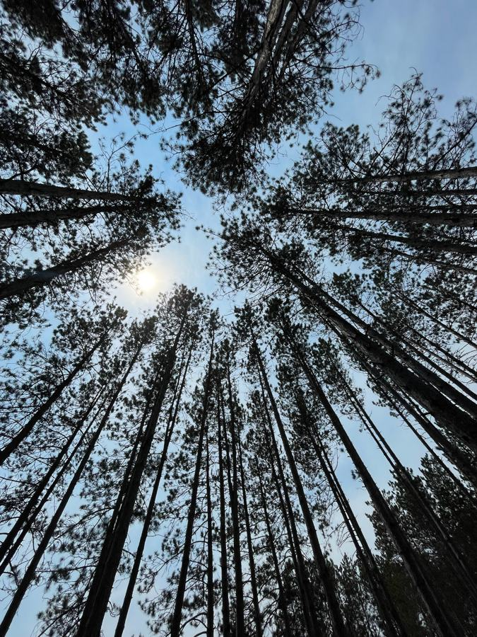
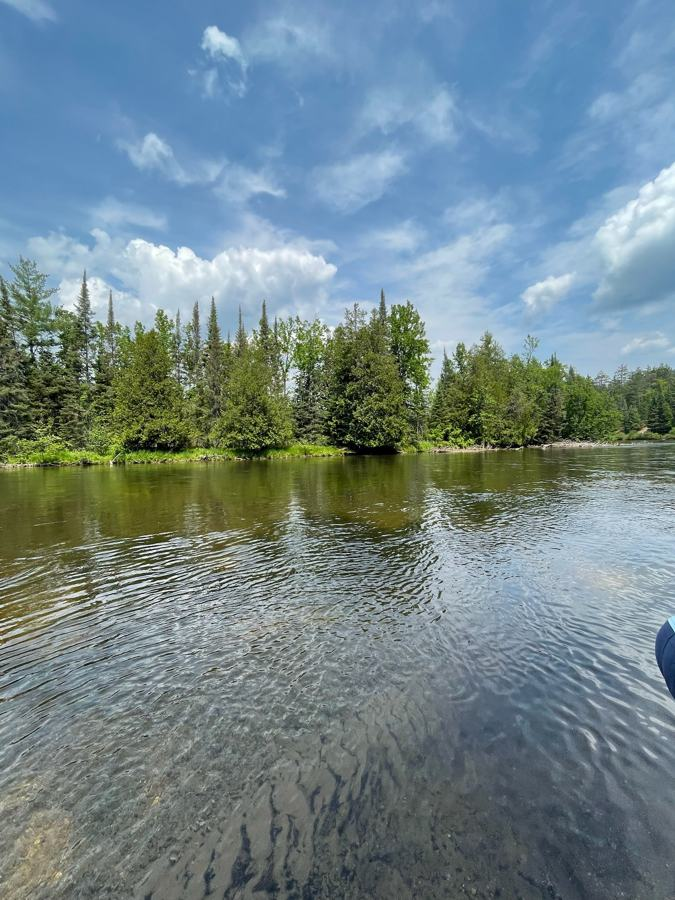
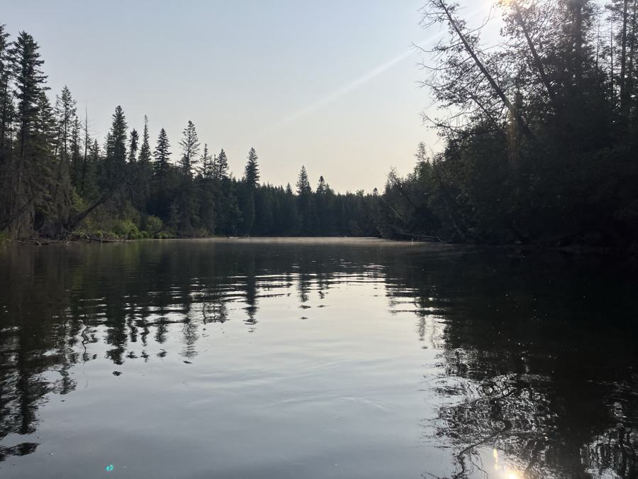
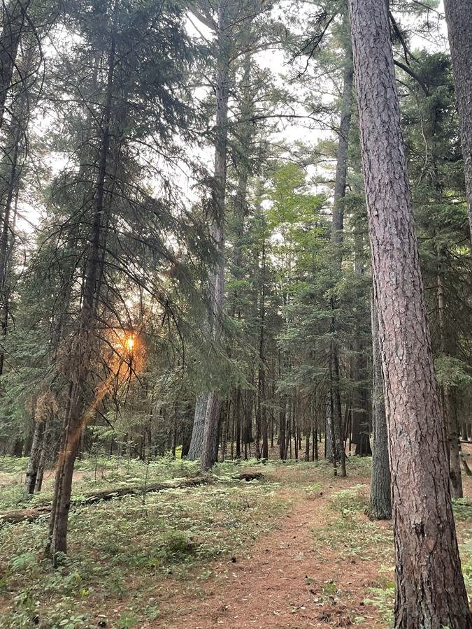
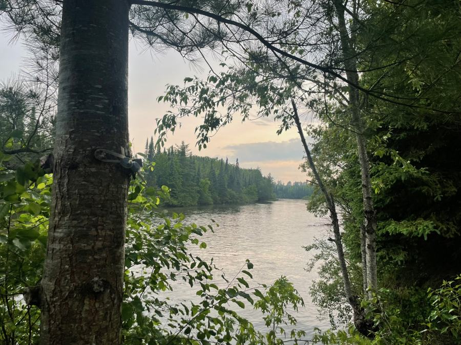
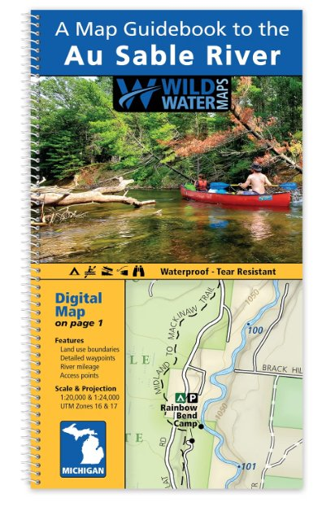

Crew 1
Livonia Ward
- Leaders
- Livonia Ward bishopric and advisers
- Crew name
- TBD
Five days. Four nights under the pines. 60.5 miles of the Au Sable River, paddled together.
Young men from across the Westland Michigan Stake will canoe the Au Sable River from Grayling, through Mio Pond and around Mio Dam, to McKinley Landing in the Huron National Forest.
We paddle in the mornings and afternoons with a lunch stop each day, camp each night at a riverside campground, cook over camp stoves and fires, and close each day with devotionals. Friday afternoon is wide open for playing in the river, and ends with a testimony meeting together.
“Rejoice in the Lord alway: and again I say, Rejoice.”
PHILIPPIANS 4:4

Church camps for young men center on three purposes. Each shapes how we spend our week on the river.
Away from screens and everyday noise, young men pray and study together each morning, hold devotionals each evening, and share testimonies on Friday, drawing closer to Heavenly Father and Jesus Christ.
Every crew paddles, cooks, sets up camp and works through the long days together. Friendships form across wards, and young men learn to look out for one another.
Steering a canoe through fast water, cooking for a crew, a 22.5-mile day and a dam portage. Young men gain real skills, stretch further than they thought they could, and take on responsibility.
Purposes from the Aaronic Priesthood Quorum Camp Guide. The General Handbook, 20.1 adds that Church activities build faith in Jesus Christ, provide fun, foster unity, and give opportunities for personal growth. As the camp guide reminds leaders, a camp that strengthens the faith of even one young man is a success.
The Au Sable's mile markers count down to Lake Huron. We launch at mile 122.5 and take out at mile 62. Tap a day to follow the canoe.








Every young man travels, paddles, cooks and camps with his crew. Each crew will choose its own name. Until then, they go by their wards.
Check things off as you pack. Your progress saves on this device. Everything that can't get wet goes in a dry bag or zip-lock.
Crews provide food, cooking gear, coolers, contractor bags and zip ties for waterproofing, a first aid kit, and crew sunscreen. The outfitter provides canoes, paddles, life jackets and throwable seat pads. Young men don't need money for meals.
Short on any gear? Tell your crew leader, or mark it on the registration form. We'll help.
The Au Sable is a friendly river, but it's still a river. Here's how we keep every young man safe and every canoe accounted for.
The outfitter provides one for every young man, plus a throwable seat pad in each canoe.
Proposed rule: required for everyone from the confluence into Mio Pond until past Mio Dam. Days 1–2, anyone unsure wears it at all times. Final rule TBD
No one ever passes the lead canoe, and no one ever falls behind the last canoe, which always carries an adult. That's how each crew knows it has everyone.
Don't overreact. When a canoe bumps a log and leans, move gently with it and keep your weight centered. Most tip-overs happen when someone throws his weight hard the other way.
Required for everyone, no exceptions. It gets very hot and sunny on the river. Crews have sunscreen out at breakfast and lunch, before anyone gets in a canoe.
Hand blisters are the #1 injury. Wear paddling gloves, or tape your hot spots with athletic tape before each day of paddling.
Black bears live in the area and are rarely seen, but raccoons will find any food left out. No food or scented items in tents, and all food is secured at night.
Every crew carries a first aid kit, and leaders know each young man's medications from his medical form. Tell an adult right away about any injury or illness. There's a hospital in Grayling.
Every campground has outhouses, and all but the last have a hand pump with good, clean water. Meadow Springs has none, so crews carry water from Mio on Friday.
Most campgrounds have cell service, and the trip carries at least one satellite communicator for emergencies. Leaders can reach parents if a young man needs to come home.
Three steps for each young man, filled out by a parent or guardian. Registration deadline: TBD
The Church's Permission and Medical Release Form. Fill in contact, medical and conditions information.
Download PDFThe young man and a parent or guardian both sign and date it. Email a clear photo or scan to Ryan Butler with the subject "YM Camp Permission Form – [son's name]".
Answer a few questions about contacts, health, diet and swimming. One form for each young man; it takes about 10 minutes.
Expectations for young men at camp will be posted here. TBD
Cost per young man TBD. Meals on the road, including Saturday's fast food stop, are covered, so no meal money is needed.

A Map Guidebook to the Au Sable River (Wild Water Maps) is waterproof and tear-resistant, with river mileage and campsites marked. Each crew carries 1–2; great for families following along too.
Start with your ward or branch Young Men leaders. They're your crew leaders.